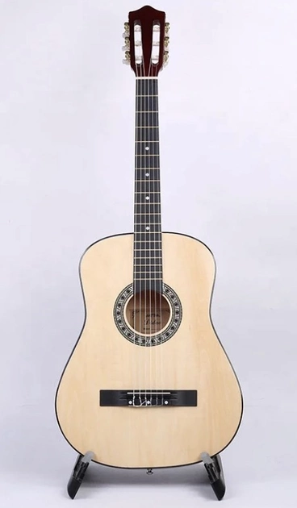

Класична
акустична шестиструнна гітара конструкції Антоніо Торреса (XIX століття).
акустична шестиструнна гітара конструкції Антоніо Торреса (XIX століття).
Конструктивною особливістю таких гітар є наявність металевого стрижня (анкера) всередині грифа для регулювання висоти струн. Під розеткою знаходиться пластикова накладка (панцир) для захисту корпуса (кузова) гітари від можливого дряпання медіатором, який часто використовують при грі на подібних гітарах. Струни встановлюють металеві. Характеризується більш дзвінким тембром.
Новая полуакустическая гитара GIBSON ES-335 BIG BLOCK RETRO WOOD ROSE создана, чтобы нарушать правила. Вдохновленный американской культурой автомобилей 50-х, этот инструмент имеет индивидуальность, которую можно сравнить с изготовлением машины на заказ. Это не традиционная гитара ES-335. GIBSON ES-335 BIG BLOCK RETRO WOOD ROSE обладает уникальными чертами, полученными от нескольких легендарных моделей серии ES. 3-слойная дека из клена имеет винтажные рога «Slim Taper» и многослойную окантовку от ES-345, в то время как накладка из темного палисандра инкрустирована перламутровыми прямоугольниками от ES-355. Как результат, полуакустическая гитара GIBSON ES-335 BIG BLOCK RETRO WOOD ROSE завладевает всем вашим вниманием.
електричний музичний інструмент, різновид гітари з електричними звукознімачами, що перетворюють коливання металевих струн на коливання електричного струму.